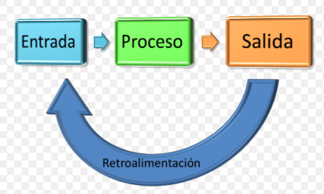

Consiste en un método de análisis para obtener un amplio razonamiento y pensamiento crítico en relación a los fenómenos, problemas y situaciones que ocurran dentro de un sistema.
El enfoque sistémico se fundamenta dentro de los campos de la biología, sociología, psicología, antropología, filosofía, economía, matemáticas, administración de negocios e ingeniería.
Entender las cosas de forma sistémica consiste en ubicarlas dentro de su propio contexto y relacionarlas entre sí, literalmente. Por ejemplo: los elementos y factores de un fenómeno determinado.
Los estudios de clima organizacional con enfoque sistémico constituyen una importante herramienta diagnóstica que permite de forma rápida y oportuna identificar las necesidades en relación con el futuro deseado dentro de la organización a la luz del desarrollo social.
En la medición del clima organizacional a lo largo de la historia se han aplicado diferentes enfoques y dimensiones representativas de la organización, que en el caso de la salud pública aportan información valiosa para la adecuada toma de decisiones en la introducción de cambios de forma planificada y en respuesta a las necesidades identificadas.
El enfoque sistemico es el tratar todo lo que existe en la realidad como un sistema cuyos componente principales son: entrada, proceso y salida.

Este concepto es muy utilizado a nivel de control de calidad, ya que los resultados obtenidos nos sirven para realizar correcciones o realizar ajustes a nuestros objetivos.
En las fábricas de focos y lámparas es común emplear pedazos de focos rotos en la mezcla de sílice que se usa para crear los tubos y bombillas de cristal, estos son focos rotos son un producto que sale del sistema en forma de desecho pero que es empleado como insumo nuevamente.